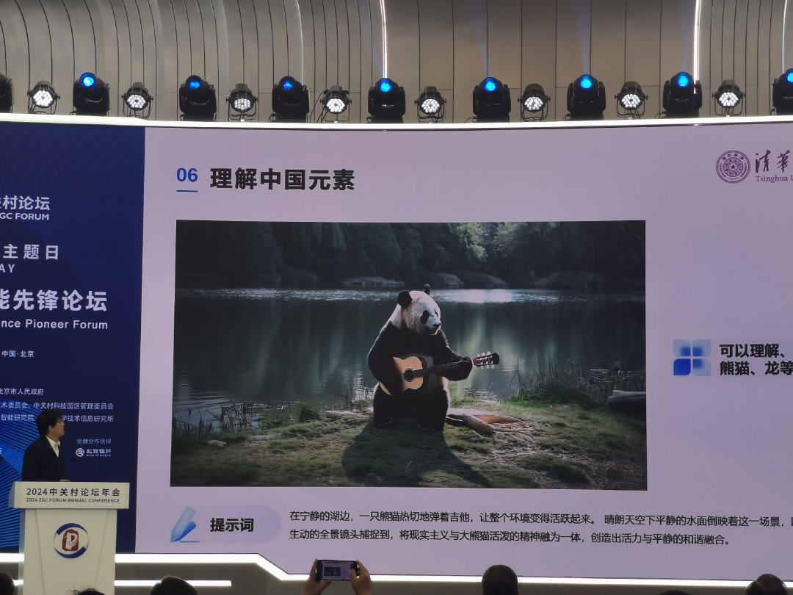
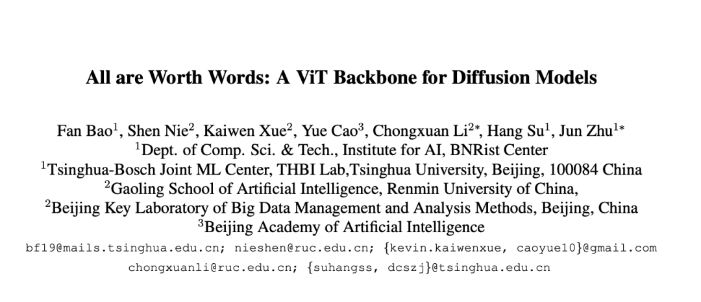
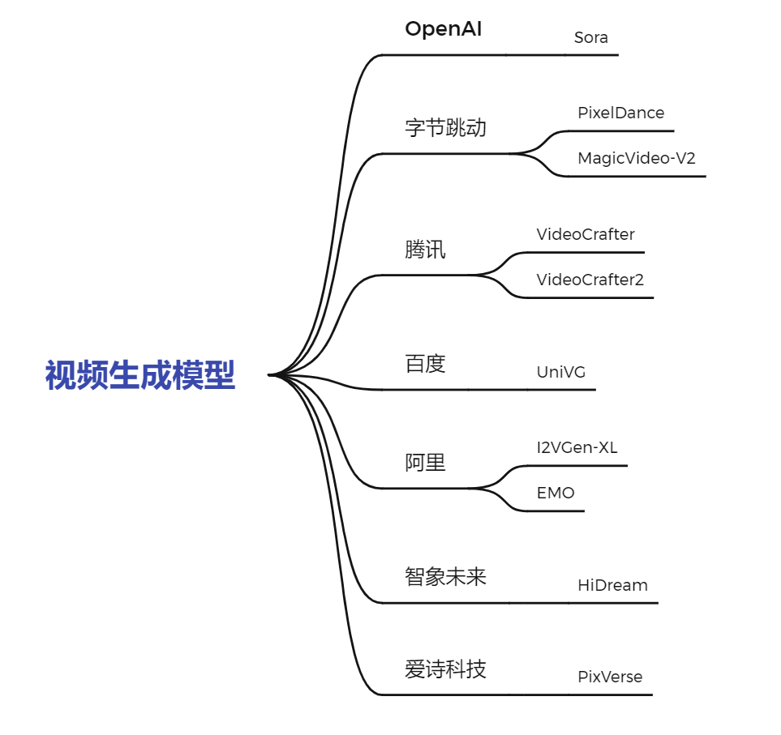
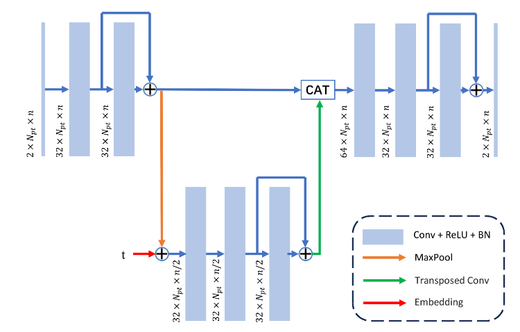
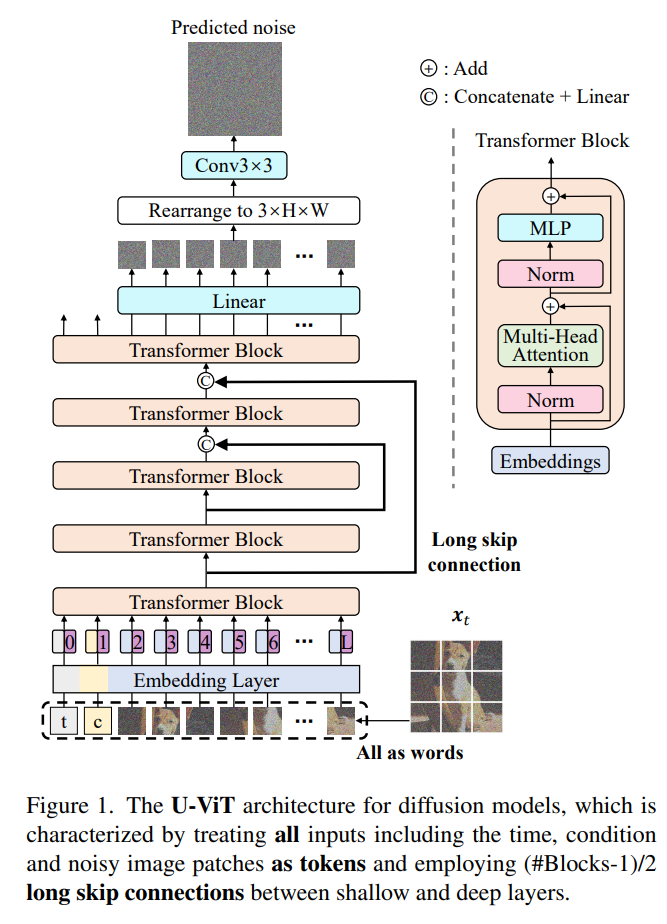
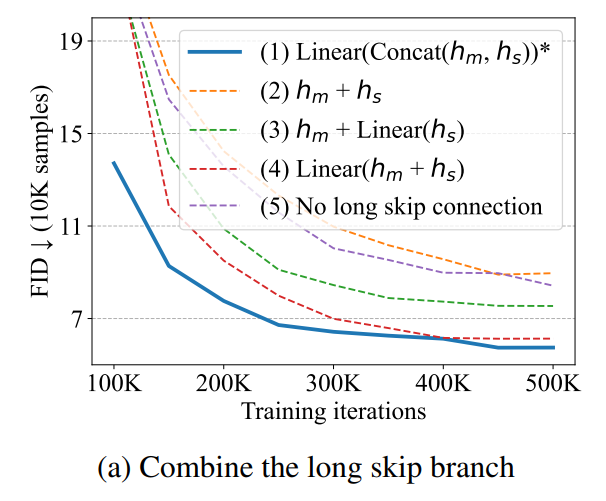
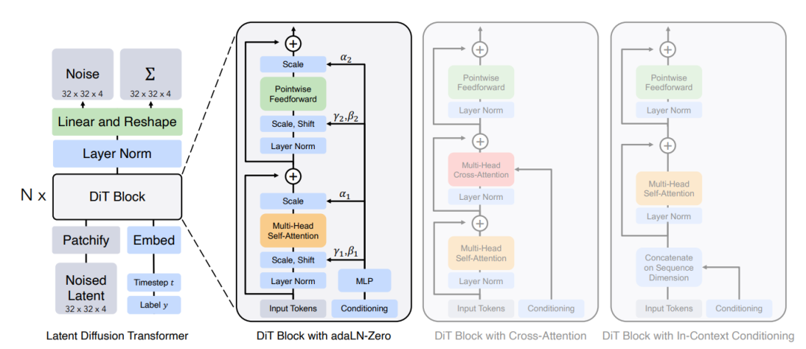
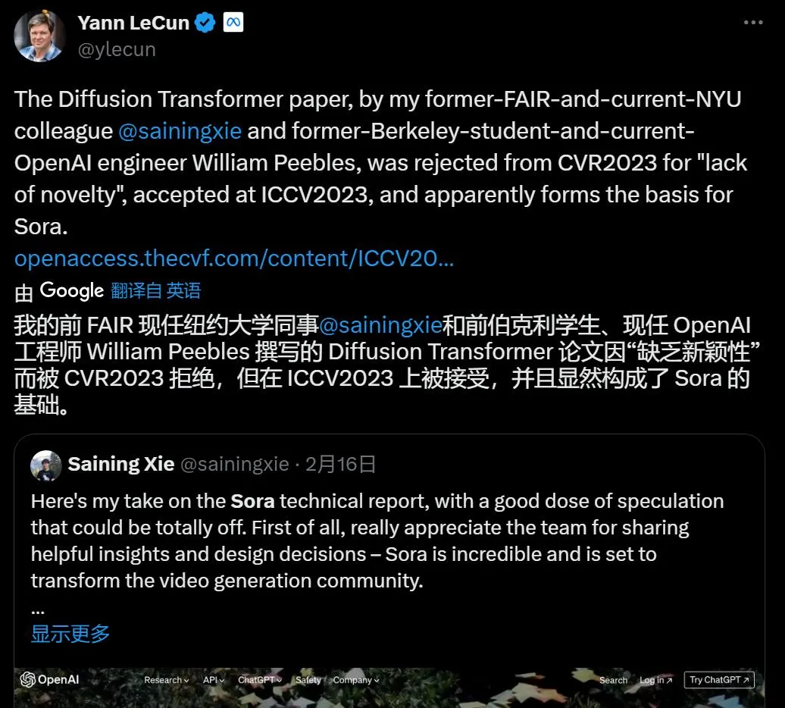
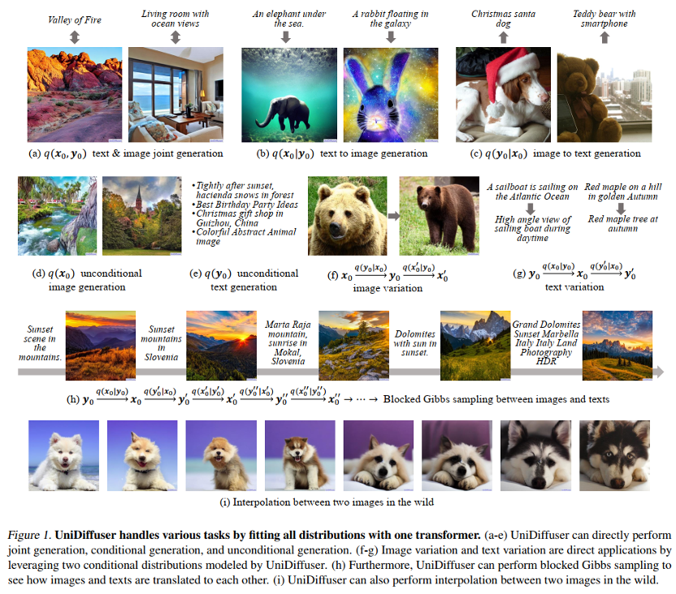

Tsinghua Team Launches Vidu, China’s First Sora-Level Video Model: A Look at the Architecture Behind It
Just two days ago, Vidu made its debut at the 2024 Zhongguancun Forum.

Headlines quickly described it as “China’s first,” a “Sora-level video model,” and a system capable of “simulating the real physical world.” Vidu immediately became a shot of confidence for China’s video-generation industry.
Vidu currently supports videos up to 16 seconds, still short of Sora’s 60 seconds. But judging from Vidu’s demonstration videos, when compared directly with Sora, Vidu already appears highly competitive in temporal-spatial consistency, adherence to physical rules, multi-shot generation, and related capabilities.
Backed by a Tsinghua Team: U-ViT Combined Diffusion and Transformers Before Sora’s DiT
Leaving video quality aside, there is something even more interesting about Vidu.
The U-ViT architecture behind Vidu follows essentially the same core idea as Sora’s Diffusion Transformer (DiT)—combining diffusion models with Transformers—and U-ViT was published earlier.
ShengShu Technology, the “Tsinghua team” behind Vidu, was founded in March 2023. But members of its founding team had already released the U-ViT unified network architecture based on Transformers in September 2022.
Sora’s core Diffusion Transformer architecture, DiT, was published in December 2022.
At the architectural level, the two works follow a very similar experimental route: both combine a Transformer backbone with a diffusion model.

Paper:
https://arxiv.org/pdf/2209.12152
Professor Jun Zhu, deputy dean of Tsinghua University’s Institute for Artificial Intelligence and chief scientist at ShengShu Technology, commented after Sora’s release: “Sora shows that the United States has a lead in multimodal foundation models, but China is not starting entirely from zero.”
Soon after Sora appeared, we reviewed the state of China’s “Sora-like” models. At that time, although several major Chinese companies and startups had already experimented with text-to-video generation, most systems were still mainly trying to “make an image move.” Improvements tended to focus on sharper images and higher resolution rather than on the kind of “world simulator” framing that made Sora so striking.

In the three months after Sora’s release, Vidu became one of the few models worldwide described as reaching Sora-like capability. Looking back to the beginning of the Transformer-plus-diffusion idea, it becomes clear that Vidu and Sora had been traveling along similar technical paths from the start.
In March 2023, targeting the image-generation capabilities of Stable Diffusion, ShengShu open-sourced UniDiffuser, described as the first multimodal diffusion foundation model built on the U-ViT framework. Its parameter count expanded from an initial 1B model to 3B, 7B, 10B, and beyond. Its scale in both model parameters and training data was designed to validate the scalability of U-ViT against systems such as Stable Diffusion.
Starting from the classic CNN-based U-Net used in diffusion models, U-ViT, like Sora’s DiT, replaces the CNN-centered backbone with a Transformer-based network.
Since Song Yang’s 2019 work on understanding generative models from a score-based perspective helped popularize U-Net-style architectures in this area, influential diffusion models such as DDPM, ADM, and Imagen have all used U-Net-like networks to model noise. A conventional U-Net looks roughly like this:

As Vision Transformers (ViT) became increasingly successful across visual tasks, a natural question emerged: does a diffusion model really have to use a CNN-based architecture? U-ViT and DiT quickly answered: clearly not—and Transformers may work even better.
To test that intuition, U-ViT introduced a ViT-based architecture. Following the ViT idea, U-ViT splits a noisy image into patches and combines those patches with information such as the diffusion timestep and conditioning variables, treating them all as tokens processed by Transformer blocks.

In addition to transferring the ViT pattern into diffusion models, U-ViT also borrows from U-Net by introducing long skip connections between shallow and deep layers.
The intuition is that diffusion denoising depends heavily on low-level visual features such as edges, corners, and colors. Long skip connections carry these low-level features from early layers directly into deeper layers, improving noise prediction and ultimately strengthening image generation.

The core idea behind DiT is very similar: introduce a ViT-style Transformer into the diffusion process and combine components such as a VAE encoder, ViT/Transformer blocks, DDPM-style diffusion, and a VAE decoder.

U-ViT, DiT, and the 2023 Conference Story
An interesting episode in this history is the conference-review process. DiT was initially submitted to CVPR 2023, but because U-ViT had already presented a closely related idea, DiT was reportedly criticized for insufficient novelty before later appearing at ICCV 2023.

At that time, both U-ViT and DiT were still focused on image generation rather than video. But in March 2023, Professor Jun Zhu’s team took another step toward multimodality with UniDiffuser, built on U-ViT. UniDiffuser supports not only text-to-image generation but also image-to-text, joint image-text generation, image-text editing, and other combinations. In that sense, its multimodal direction foreshadowed the later appearance of Vidu.

After Vidu’s release, Professor Zhu wrote: “Vidu, we do, we did, we do together! Thanks to the team for their day-and-night persistence, allowing the architecture developed in the lab to finally bear fruit.”
Unlike companies following a straightforward “copy and catch up” strategy, Vidu appears to have grown out of its own accumulation of machine-learning theory, multimodal foundation-model research, and large-scale training experience. That foundation may be exactly what allowed the team to make rapid progress on several of the key technical challenges highlighted by Sora.
And Vidu differs from Sora in another interesting way: its lineage begins with a multimodal diffusion model rather than video generation alone. Video may therefore be only one outward form of the system’s broader capabilities.
From that perspective, what Vidu may eventually promise is something more ambitious than simply becoming “China’s Sora.”